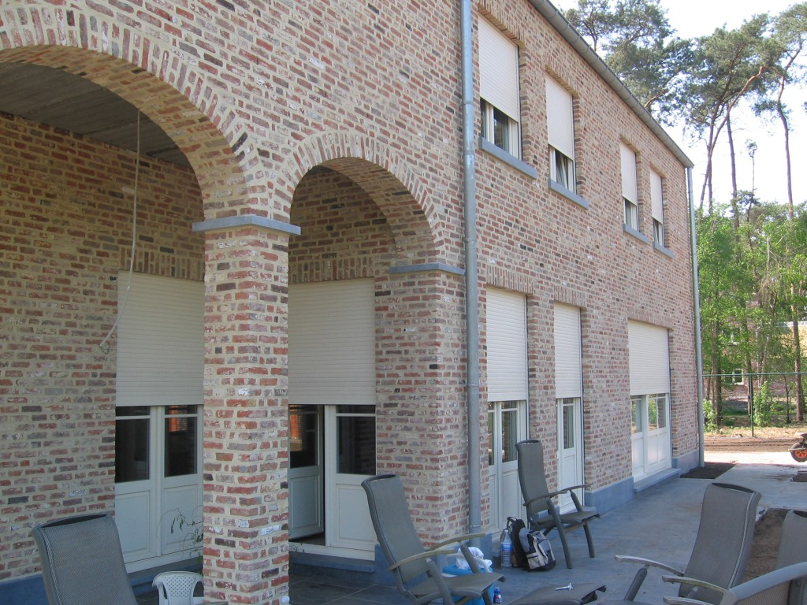

Voorzetrolluiken
Rolluiken waarbij de kast aan de buitenkant op de muur of het kozijn wordt gemonteerd (ideaal achteraf).
Bekijk meer Joris Menten bv
Rolluiken
Joris Menten bv
Rolluiken
Rolluiken bieden meer privacy, helpen warmte en koude buiten te houden en geven je ramen een verzorgde uitstraling. Dit is precies waar Joris Menten bv op inzet.
De focus ligt op wat echt telt: betrouwbare werking, nette montage en een resultaat dat er gewoon goed uitziet.
Van voorzetrolluiken tot inbouw en garagerolluiken: elke subcategorie heeft zijn eigen toepassing en voordelen. Ontdek wat bij jouw situatie past.
Rolluiken waarbij de kast aan de buitenkant op de muur of het kozijn wordt gemonteerd (ideaal achteraf).
Bekijk meerRolluiken waarbij de kast netjes weggewerkt is in de muur boven het raam, vaak bij nieuwbouw.
Bekijk meerRolluiken die specifiek zijn aangepast en verbreed om als garagedeur te dienen.
Bekijk meerRolluiken waarbij de kast aan de buitenkant op de muur of het kozijn wordt gemonteerd. Ideaal bij bestaande woningen waar de kast niet in de muur kan worden weggewerkt.

Rolluiken waarbij de kast netjes weggewerkt is in de muur boven het raam. Vaak gekozen bij nieuwbouw voor een strakke, ononderbroken gevel.
Rolluiken die specifiek zijn aangepast en verbreed om als garagedeur te dienen. Een ruimteloze, stevige en veilige oplossing voor je garage.

Een rolluik moet naadloos aansluiten bij de woning — zowel functioneel als visueel. Daarom kiezen we materialen en een plaatsing die het hele plaatje strak maken.
Neem contact op voor advies of een offerte. Kort, duidelijk en zonder omwegen.